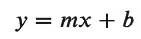
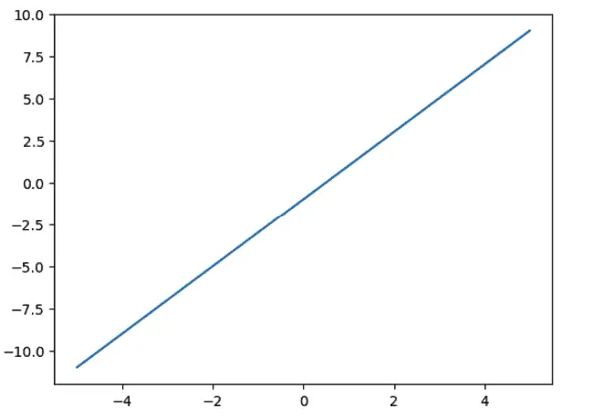
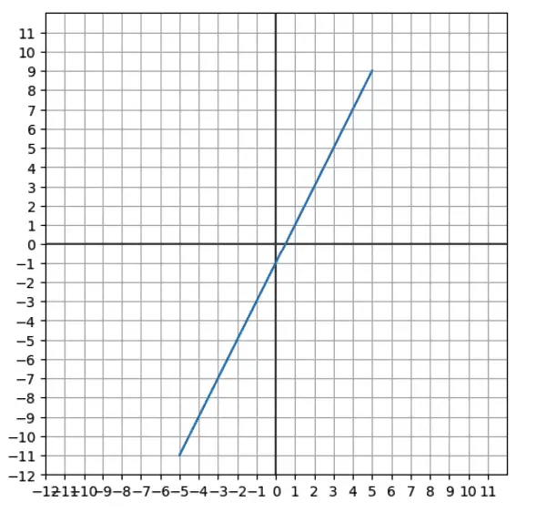
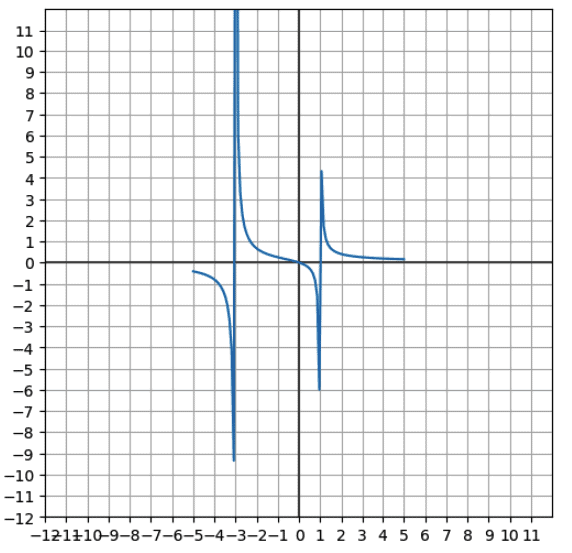
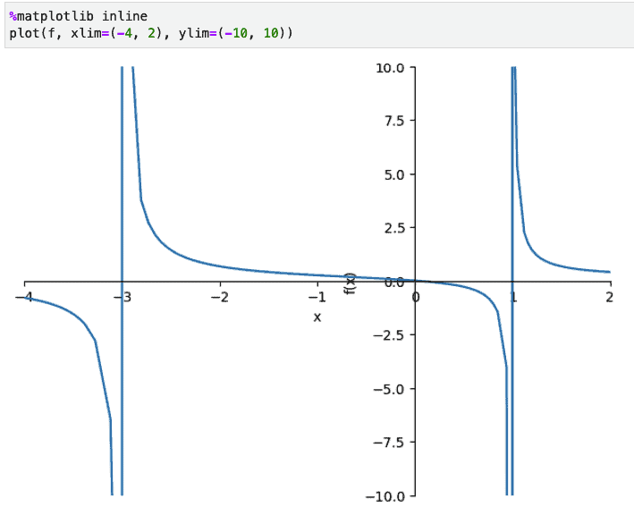

Matplotlib Coordinates: Graphing Math Functions in Python¶
Matplotlib is the most widely-used Python plotting library, but it’s not as intuitive to use for general math plotting as a dedicated “graphing calculator” like Desmos or WolframAlpha. Using it this way means you have to set up the Matplotlib coordinates and go through a few extra steps.
The first issue that confronts us is the issue of how to plot a math function in the first place. If we use the plot function in SymPy, which can use Matplotlib as a back end, this issue is solved for us, but how do we set this up for a plain Python function if we want to chart the results of this function applied over a range of values?
Moreover, once we’ve worked through that, we face some additional formatting issues that we need to solve.
If we don’t set up the plot size correctly, by default MatPlotlib may give us a compressed-looking plot, when often what we want is a square graph with equal extents for the X and Y axes.
By default, Matplotlib won’t display the X and Y axis lines for us (but it’s easy to add)
We’ll probably want some kind of tick marks on the axis, or perhaps a grid to appear, as it did on the graph paper that we loved (?) so much in high school.
We worked through some of these issues in a cursory way in the article, Creating a Python Interactive Plot Using Matplotlib in Jupyter, but our focus there was on setting up the interactivity.
In this article, we want to take a more step-by-step approach to explain each phase explicitly for readers who may want – or even need – to use matplotlib to function as a somewhat “manually configured” graphing calculator.
Again, Matplotlib is a low-level tool, and this sort of thing is much easier to accomplish in a tool more dedicated to symbolic math (like SymPy) or a graphing calculator (like Desmos). That said, we’ll learn a great deal about Matplotlib configuration along the way, so it’s worthwhile to understand how to accomplish it there.
We begin not far from Euclid’s beginning 2,300 years ago. We start with simple points and lines.
Plotting a Line in Matplotlib¶
Let’s begin with a simple linear function. We recall from algebra trauma class that a linear function is simply one whose graph is a straight line, in the form:

In Python, it’s easy to see how we might code such a function, with some defaults for m (the slope) and b (the y-intercept):
def linear(x, m=2, b = -1):
"""A function to plot an arbitrary point (x) on a line."""
return m * x + b
As a quick detour, recall that mathematically, a function maps one numeric value to another. Strictly speaking, that’s what a function does in computer science as well, though often what we call a function is really a subroutine that doesn’t return a value, like Python’s print “function”.
Plotting that function with its default values (y = 2x -1) is very simple in Desmos, as we see here. In Matplotlib, to get a line from it in Python, we first need to get some values for X, so we’ll have a line and not a single point. Fortunately, for a line segment, we only need two points. For this example, we’ll stick to Python lists rather than NumPy arrays.
x_values = [-5, 5]
Now that we have our x values, we need to apply our function to map these to the y values. We can do this using a simple for comprehension, and plot the function using matplotlib
import matplotlib.pyplot as plt
y_values = [linear(x) for x in x_values]
plt.plot(x_values, y_values)
Output:

As you can see, the default layout leaves plenty of room for improvement. We’ll need functions to draw the axes, make the grid square, and set the size of the ticks of the grid. All of these will accept a minimum and maximum range to use.
To select a range to use, let’s just notice by inspecting it visually that 12 x 12 will be “big enough” in this case for the values. But first, let’s define each function.
To make the grid square, we call the Matplotlib axis function twice.
def configure_graph_grid(grid_min, grid_max):
"""Set up a square grid axis"""
# Make it square and set limits
plt.axis('square')
plt.axis(( grid_min, grid_max, grid_min, grid_max))
In effect, calling this function gives us a square piece of paper of the right size. Now, let’s turn it into “graph paper” by drawing in the boxes on it.
def set_ticks(axes, min_val, max_val, tick_size=1):
"""Sets the granularity of the boxes. Default is 1"""
ticks = [x for x in range(min_val, max_val, tick_size)]
axes.set_xticks(ticks)
axes.set_yticks(ticks)
OK, we have our graph paper now. Next, as you’ll recall from high school, “Take out your rulers. It’s time to draw those X and Y axes.”
def plot_axes(grid_min, grid_max):
"""Plot x and y axes, x first then y"""
plt.plot([grid_min, grid_max], [0,0] , color=".3")
plt.plot([0,0],[grid_min, grid_max], color=".3")
plt.grid()
We’re almost there. We’re now ready to actually use these functions and write a bit more code. Specifically, we:
Set the grid minimum and maximum values. Earlier we said that -12, 12 would work
Set the figure size (in inches). We’ll go with six (though we may scale it down in our screenshot).
Call the relevant functions we need.
Plot the graph:
min_val, max_val = -12, 12
fig, axes = plt.subplots(figsize=(6,6))
configure_graph_grid(min_val, max_val)
plot_axes(min_val, max_val)
set_ticks(axes, min_val, max_val)
line = plt.plot(x_values, y_values)
The output is now much easier to understand than our first graph was:

Now it’s obvious that the slope (the rise over the run, or the ratio of y to each x) is 2, and the y-intercept is -1.
A Non-Linear Plot in Matplotlib¶
Now that we have most of the code in place to set up the plot, we’re willing to try our hand at a non-linear graph. Non-linear plots introduce a couple of new wrinkles. The first is that for a curve, we’ll need to plot more than two points. This is easy to accommodate using NumPy’s linspace function. It’s a little more complex using a Python list (but not too bad). Here we show both versions. We want a range of 100 points in each case, evenly spaced between -5 and 5.
import numpy as np
x_as_array = np.linspace(-5, 5, 100)
x_as_list = [(val / 10) for val in range(-50, 51)]
Using linspace, we just pass the parameters that we want. To set it up as a list, we used a list comprehension with the range function, but since range deals with integers, we needed to scale “up” to get 100 integers in the correct range, and then divide the result by 10 to get from -5 to +5 in .1 increments.
The second wrinkle we need to deal with is the possibility of an asymptote – that is to say, a function where f(x) approaches infinity in the limit.
I happen to have such a function just hanging around in some calculus notes that I took in SymPy:

If we implement that as a Python function, we have to be careful to guard against dividing by zero (since that case is what causes the asymptote).
The following code will work for this purpose. If the denominator evaluates to zero, we return NaN (not a number). Otherwise, we divide x by the denominator as shown in the function above.
from math import nan
def function_with_asympotes(x):
"""Implement a fractional function with a possible zero in the denominator"""
denom = (x + 3) * (x - 1)
if denom:
return x / denom
else:
return nan
Using the configuration functions we wrote earlier, all that’s left to do now is to set up our Y array by calling the function in a loop just as we did for our linear function. Then we call our configuration functions and plot the graph as we did before, too. Putting that all together, the code to graph our linear function looks like this:
x_array = np.linspace(-5, 5, 100)
y_array = np.array([function_with_asympotes(x) for x in x_array])
min_val, max_val = -12, 12
fig, axes = plt.subplots(figsize=(6,6))
configure_graph_grid(min_val, max_val)
plot_axes(min_val, max_val)
set_ticks(axes, min_val, max_val)
line = plt.plot(x_array, y_array)

That came out reasonably satisfying, though not quite perfect. The vertical asymptotes are at -3 and 1 (the two values that make the denominator work out to be zero). It doesn’t look like they extend to infinity in this plot, but the values are correct. For comparison, here’s how SymPy plotted it:

Closing Thoughts¶
At this point, we’ve shown how to use Matplotlib as a sort of “do-it-yourself” graphing calculator. To be sure, as we’ve emphasized, this is not the easiest tool to use for this. Python’s SymPy and other free, non-Python tools such as Desmos and WolframAlpha let you plot mathematical functions far more easily. However, our journey to make it work has taught us a lot about how to size and scale graphs, as well as how to configure Matplotlib coordinates and axes.
Want to run this code online? You can do that on our Online Python site, with this notebook.